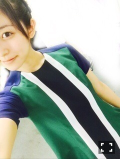
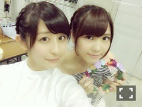
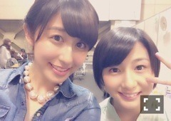

| 2014/06 30 Mon | アンダーライブ！！ (´>∀<｀)ゝ |
ちはるーむへようこそ◡̈♡
昨日、今日と、
アンダーライブ！！！
反省点やまだまだだなって思うところは山ほどあったけど
それでも、すごくすごく楽しかった(｡-_-｡)！！
ユニットコーナーでは、
28日の昼、夜、29日の夜公演で
「私のために誰かのために」
を歌わせていただきました！！！
まいやんポジで、すごい緊張したけど
それでも私の歌を皆さんに届けてる感じが気持ちよかったです(｡-_-｡)
また、こうやってソロで歌う機会増えたらいいなあ

29日の昼は、
「他の星から」「でこぴん」
の2曲を披露させていただきました！
2曲ともまだまだ課題はあったけど
必死にダンスを覚えて位置も覚えて歌詞も覚えて、
それは無駄にはなってないはず！
楽しかったです(｡-_-｡)♡

他の星からの衣裳(﹡ˆ ˆ﹡)
すっぴんでごめんね(´･_･`)笑
来てくれた方、楽しんでいただけましたか？？◡̈
もし、少しでも楽しかったなって思ってもらえてたらそれだけで嬉しいです(﹡ˆ ˆ﹡)
おうちで応援してくれてた方も
本当ありがとうございました！！！
まだまだ残ってるアンダーライブ、
みなさん楽しんでいきましょう！！



れなりんの突然の卒業発表。。
私たちはちょっと前に聞いたんですが
やっぱりびっくりしてしまって。。(´･_･`)
やっぱり卒業はさみしいよね。(´･_･`)
でも、れなりんが決めたこと、
私たちは精一杯応援するし、
早稲田大学でも一生懸命頑張ってほしいな(﹡ˆ ˆ﹡)
頑張れなりん


今にも寝落ちしそうなくらいの
眠気に襲われてます。。笑(´･_･`)
ぐっすり寝て、明日からまた学生！会社！
がんばるぞ！！！
へたっぴういんく
ばいるんっ
るんるんっ
ちはるんっ
(´>∀<｀)ゝ
コメント(157)
2014/06/30 00:30